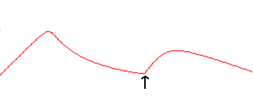

Hill climbing
Hill climbing is an iterative algorithm that typically starts with an arbitrary solution to a problem and then incrementally improves the initial solution by changing one element at a time. At each step, the algorithm's fitness function always goes up; if none of the neighboring solutions increase the fitness function, then the solution is at a local maximum and the algorithm terminates. This algorithm can also be terminated after a set amount of time or number of iterations, but in most cases, you would probably choose to let it run until it reaches a local maximum (as the finch implementation does).
The algorithm does not maintain any sort of search tree, so it only needs to keep track of the state and the value of the objective function. It also does not look ahead beyond the current solution's immediate neighbors. Because the algorithm always moves to a good neighbor state without thinking ahead about what it will do next, it is considered a greedy algorithm.
Hill climbing is a very simple algorithm and therefore runs very quickly. For this reason, it works well on all sorts of optimization problems.
Steepest-ascent hill climbing
Steepest-ascent hill climbing is the standard and most commonly used version of the algorithm. The basic approach is to start with a random state and then always move to the neighbor that increases the objective function the most.
Below is pseudocode for the algorithm:
$ // Return a state that is a local maximum
$ function steepest_ascent_hill_climbing(problem):
$ current-state ← Initialize the problem with a starting state
$ loop do
$ Set neighbor to highest-valued successor of current-state
$ if the value of neighbor ≤ the value of current-state:
$ return current-state
$ current-state ← neighbor
The finch implementation of steepest-ascent hill climbing has the following signature:
func hill_climb(initial_solution []int, evaluate func([]int) float64,
get_neighbors func([]int) [][]int) ([]int, float64)
The function takes in the following parameters:
- initial_solution - An int[] array with an initial solution to seed the algorithm with
- evaluate - A function that you must construct and pass in which takes a solution of type int[] as a parameter and returns a fitness score for the given solution of type float64
- get_neighbors - A function that you must construct and pass in which takes a solution of type int[] as a parameter and returns a 2-dimensional array of type int[][] with all neighboring solutions
The function returns two values:
- The state at the local maximum (type []int)
- The fitness score at the local maximum (type float64)
Random-restart hill climbing
The simple hill climbing algorithm above only starts with one starting state. For convex problems with only one local maximum, the algorithm will generally perform very well. However, many search spaces of real problems have, to quote Russell and Norvig's textbook on artificial intelligence, "a landscape that looks more like a widely scattered family of balding porcupines on a flat floor, with miniature porcupines living on the tip of each porcupine needle, ad infinitum." In that case, starting with just one starting point may lead the basic hill climbing algorithm to converge to a local maximum that is far lower than the global maximum. To alleviate this, we can try running the algorithm again-and-again with various random starting solutions and then taking the state that maximizes the fitness function the most from all of those runs. This is called random-restart hill climbing.
The finch implementation of random-restart hill climbing allows you to pass in a function for creating starting points and then it runs the hill climbing algorithm on each of those. It takes advantage of Go's concurrency features so that each instance of the algorithm is run on a different goroutine. As such, if you run your program on multiple cores, it will speed up this algorithm significantly. Below is the function's signature:
func random_restart_hill_climb(num_restarts int, evaluate func([]int) float64,
create_random func() []int, get_neighbors func([]int) [][]int)
The function takes in the following parameters:
- num_restarts - The number of restarts (i.e. the number of different random starting points to run hill-climbing on)
- evaluate - A function that you must construct and pass in which takes a solution of type int[] as a parameter and returns a fitness score for the given solution of type float64
- create_random - A function that you must construct and pass in which takes no parameters and returns a 1-dimensional array of type int[] containing a random starting solution for your problem
- get_neighbors - A function that you must construct and pass in which takes a solution of type int[] as a parameter and returns a 2-dimensional array of type int[][] with all neighboring solutions
The function returns two values:
- The state at the local maximum (type []int)
- The fitness score at the local maximum (type float64)
Stochastic hill climbing
In some cases, taking the steepest route may not get you to the best solution. For example, imagine if your search space looks like the one in the figure below and your algorithm starts out where the arrow is:
If you were to use the steepest ascent approach, then the algorithm would always move to the right in this example, and so it would end up at the local maximum there. With stochastic hill climbing, we choose probabilistically from the uphill moves, with the probability of selection varying according to the steepness of the uphill move. As such, the algorithm is more likely to move to the right in the example above, but at some of the time it would move to the left, leading you to the global maximum. This example is somewhat contrived to make it very simple, but for the search landscapes in some real world problems, the steepest ascent method might not work as well as this one.
When assigning selection probabilities to the various uphill neighbors, the finch implementation of this algorithm looks at all neighbors that improve on the current solution and then assigns probability of selection proportional to the amount of improvement. For example, let's say there are three neighbors to the current solution that improve the current score by 1, 2 and 3 point respectively. The probability of moving to each respective neighbor would then be 1/6, 2/6 and 3/6.
Below is the function's signature:
func stochastic_hill_climb(initial_solution []int, evaluate func([]int) float64,
get_neighbors func([]int) [][]int) ([]int, float64)
The function takes in the following parameters:
- initial_solution - An int[] array with an initial solution to seed the algorithm with
- evaluate - A function that you must construct and pass in which takes a solution of type int[] as a parameter and returns a fitness score for the given solution of type float64
- get_neighbors - A function that you must construct and pass in which takes a solution of type int[] as a parameter and returns a 2-dimensional array of type int[][] with all neighboring solutions
The function returns two values:
- The state at the local maximum (type []int)
- The fitness score at the local maximum (type float64)